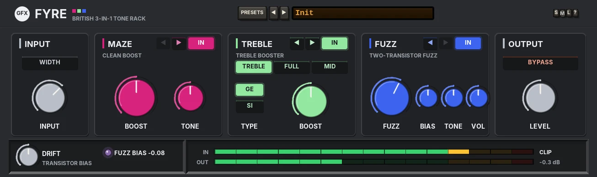
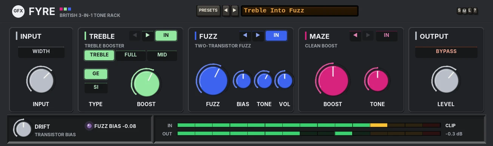

FYRE
A vintage British 3-in-1 tone rack: a clean boost with sparkle, a single-transistor treble booster and a thick two-transistor fuzz, in any order you like.

Overview
FYRE puts three classic British pedal circuits side by side in one dark rack, each in its own colour: MAZE, a clean boost (dark hot pink); TREBLE, a single-transistor treble booster (light green); and FUZZ, a two-transistor fuzz (royal blue). The sound of each one is designed from scratch.
The signal runs left to right through the modules in the order you see them. The ◄ and ► keys on each module move it one place left or right, so you can put the boost before the fuzz to drive it harder, or after it to lift its level, put the treble booster into the fuzz, and so on. A change of order is click-free: the new chain runs alongside the old one for 40 ms, settling on the signal, then the two crossfade over 25 ms.
Each module has its own IN key, and every key fades over 10 ms, so nothing clicks. The whole chain runs at twice the sample rate with the house anti-aliased clippers, with no added latency. FYRE runs in linked stereo: left and right go through two identical paths that share every control and the bias drift, so a mono guitar comes out the same on both sides. WIDTH, in the INPUT section, sets the right side's parts slightly apart for a stereo spread.
TREBLE and FUZZ are level-matched to the bypass at their defaults; MAZE is a boost, so BOOST raises the level (and drives whatever comes after it). The presets are levelled against Init with LEVEL.
Reach for it for
- Classic treble-boosted British lead tones, germanium or silicon
- A clean boost with sparkle, before or after the dirt
- Thick fuzz that cleans up when you roll your guitar's volume back
- Trying the same three pedals in every order to find the one that sings
Controls
The header
- PRESETS
- Opens the full preset list, with Reset all to defaults at the end.
- ◄ / ►
- Step to the previous or next preset (wrapping round).
- Preset display
- Shows the preset name. Click it for the preset list too.
- S / M / L
- Panel size: small, medium or large. The panel also scales to fit the plugin window. New instances open in medium, on Init.
- ?
- Opens a pop-up with the design credit, the GFX website address and the address of this manual. Click anywhere to close it.
Knobs: drag up or down (Shift for fine moves) or use the mouse wheel; double-click resets a knob to its default. The label under a knob turns into its value while you touch it.
INPUT
- WIDTH
- Off by default. Lit, the right side runs with slightly different parts from the left (boost, gain and bias), so a mono guitar spreads across the stereo field. Off, both sides are identical.
- INPUT
- -24 to +12 dB (0 dB): the level into the rack. Turn it down to clean the fuzz up, as you would with your guitar's volume.
The modules
Each module has ◄ / ► keys to move it left or right (the key at the end of the row is dimmed) and an IN key.
MAZE · CLEAN BOOST (dark hot pink)
- BOOST
- 0 - 10 (5): 0 to +20 dB (+10 dB at 5). Not level-compensated: it is a boost.
- TONE
- 0 - 10 (5): a sparkle shelf from 3.2 kHz up. 5 is flat, 10 is +9 dB, 0 is -6 dB.
A 20 Hz coupling high-pass and an op-amp stage with plenty of headroom: its slightly lopsided soft limit only adds a little harmonic weight when you hit it hard.
TREBLE · TREBLE BOOSTER (light green)
- TREBLE / FULL / MID
- The range, set by the input coupling cap: TREBLE (default) a first-order high-pass at 1.6 kHz, the classic treble boost; FULL a full-range boost (80 Hz); MID a mid hump (a 550 Hz high-pass and a 3.5 kHz low-pass). Switching sweeps the filter over 40 ms: no click.
- GE / SI
- The transistor: GE (germanium, default) soft and lopsided, with a lower ceiling and a darker top at 9 kHz; SI (silicon) harder and nearly symmetric, more open to 12 kHz.
- BOOST
- 0 - 10 (5): the transistor's gain, x2 to x40 on an audio taper.
The transistor stage follows the house drive standard: a drive-tracking pre-filter into an anti-aliased knee clipper whose knee softens as it is pushed.

FUZZ · TWO-TRANSISTOR FUZZ (royal blue)
- FUZZ
- 0 - 10 (6): the first stage's gain, x3 to x60.
- BIAS
- 0 - 10 (5): the second stage's bias. 0 is smooth, 5 the standard setting, 10 starved and sputtering, its dead zone gating the decay.
- TONE
- 0 - 10 (5): a tilt from 1.5 kHz, dark to bright.
- VOL
- 0 - 10 (5): 5 is matched to the bypass, 10 is +6 dB, 0 is silent.
A low input impedance (a gentle top loss), a soft, lopsided first stage, then a hard, asymmetric second stage that squares the wave. It cleans up as the input drops: at FUZZ 6 the distortion falls from about 36% at a normal guitar level to about 9% 12 dB down and under 1% 22 dB down.
OUTPUT and the bottom strip
- BYPASS
- Fades the whole rack out (10 ms).
- LEVEL
- 0 - 10 (5): the level of the whole rack: 5 is matched, 10 is +6 dB, 0 is silent.
- DRIFT
- 0 - 100% (50%, the standard amount; 0 = none): transistor bias. See DRIFT below.
- FUZZ BIAS
- The fuzz's live bias, its lamp going from blue to orange as it starves.
- IN / OUT
- The input and output meters.
- CLIP
- The house output stage's soft clip, always on, with its ceiling at -0.3 dBFS.
DRIFT
Transistor bias. The treble booster's bias and both fuzz stages' biases wander slowly with temperature, each on its own path (the MAZE's op-amp barely moves), and the fuzz's bias sags a little on hard hits: it is drawn down in about 40 ms and recovers over about a second. At 0 it all holds still.
Presets
Twelve presets, Init and eleven more. A preset sets the three modules (keys and knobs), the order and LEVEL; INPUT, WIDTH and DRIFT stay as they are. Every preset plays within about half a dB of Init.
- Init
- MAZE, TREBLE, FUZZ, all in, every knob at its default.
- Clean Sparkle
- MAZE alone with the sparkle up.
- Treble Bite
- The germanium treble booster into a light MAZE.
- Silicon Treble
- The silicon treble booster alone, pushed.
- Full Range Push
- TREBLE on FULL into MAZE.
- Mid Push
- TREBLE on MID: a mid-humped lead boost.
- Thick Fuzz
- The fuzz alone, thick and dark.
- Cleans Up
- The fuzz into MAZE at a lower FUZZ: roll your volume back and it cleans up.
- Treble Into Fuzz
- The treble booster into the fuzz (MAZE out, moved to the end).
- Fuzz Into Boost
- The fuzz, lifted by MAZE after it.
- Sputter Gate
- The fuzz at 9 with BIAS at 9.5: gated, sputtering decays.
- Wall of Fyre
- Everything up: the silicon treble booster on FULL into MAZE into the fuzz at 9.
- Reset all to defaults
- (Last in the list.) Init, with INPUT, WIDTH, BYPASS and DRIFT back to their defaults too.
Tips
- Put FYRE first, on a clean DI guitar track, and an amp or amp plug-in after it, as you would a pedalboard.
- For the classic treble-boosted lead, use TREBLE on GE into a slightly driven amp, and nothing else.
- Move MAZE before FUZZ to drive the fuzz harder, after it to lift a fuzz solo above the band.
- Use INPUT as your guitar's volume knob to hear the fuzz clean up.
- Set DRIFT to 0 for a steady, repeatable tone.
File: gfx-fyre.jsfx